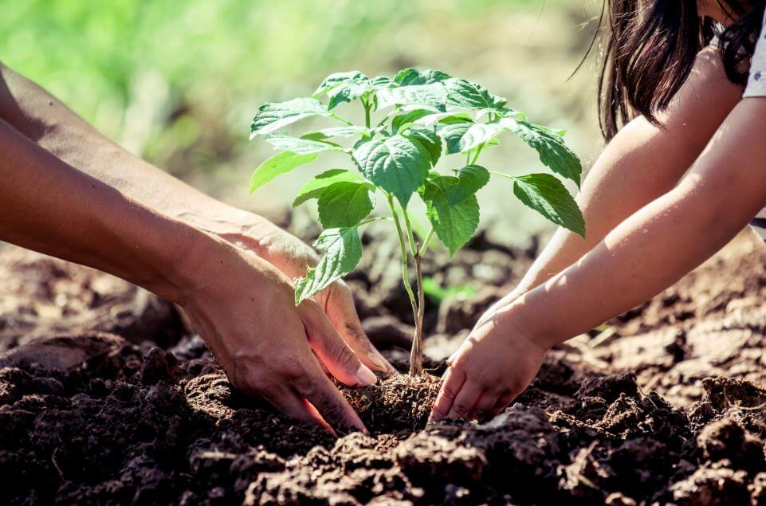
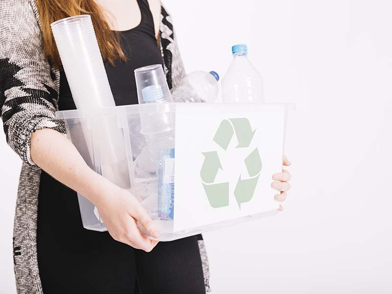
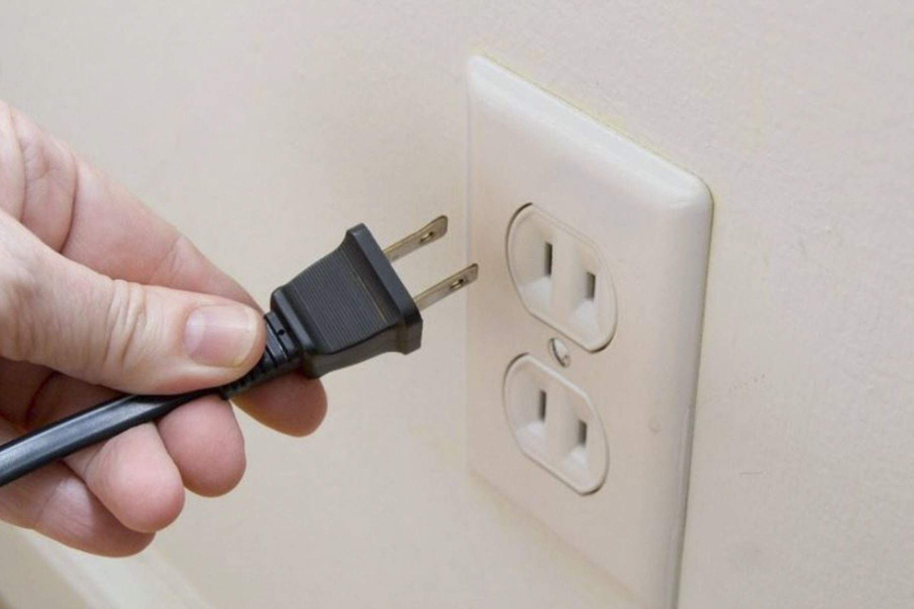
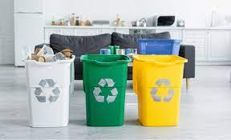
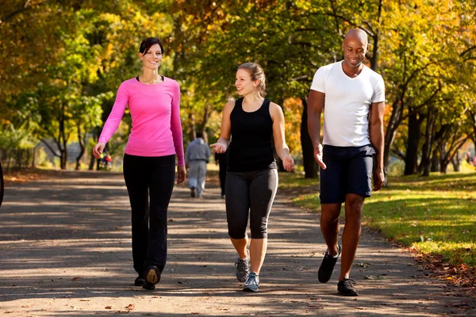

♻️ Eco-Consejos Interactivos
 🌱 Planta tu propia planta
Adopta una planta en casa o en el salón. Ayuda a purificar el aire y mejora el ánimo.
 🚯 Reduce el uso de plásticos
Usa botellas y envases reutilizables. ¡Dile adiós a los desechables!
 🔌 Desconecta lo que no uses
Apagar luces y cargadores ahorra energía. Es un pequeño gesto con gran impacto.
 ♻️ Clasifica los residuos
Separa papel, plástico, orgánicos y no reciclables. Respeta los colores de las canecas.
 🌿 Usa transporte eco-amigable
Caminar, ir en bicicleta o usar transporte público reduce la contaminación y el uso de combustibles fósiles.